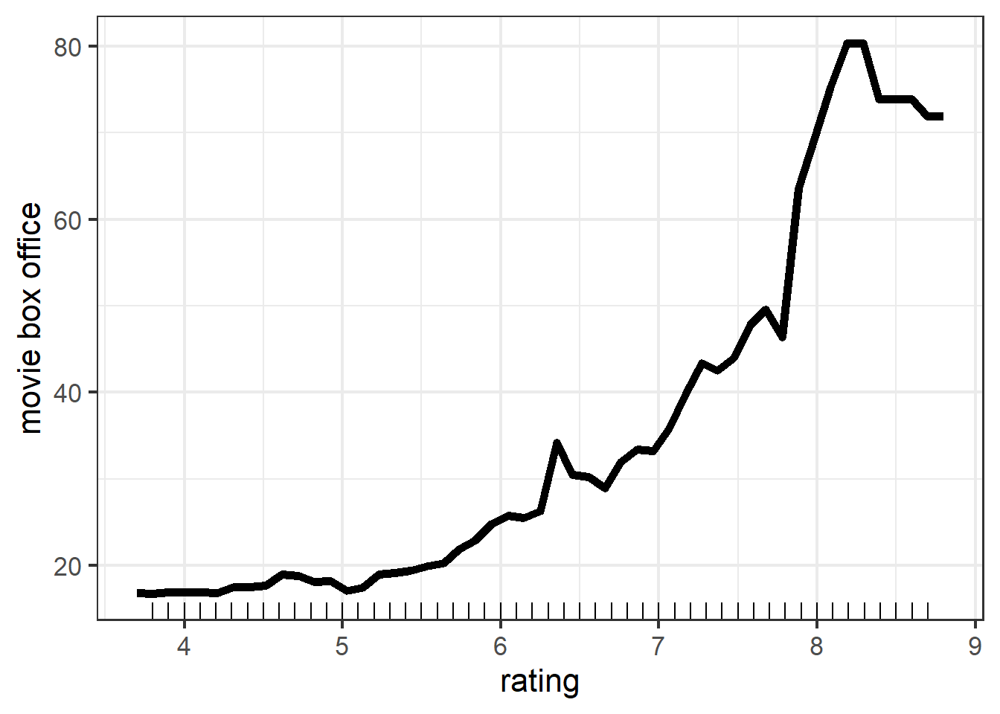
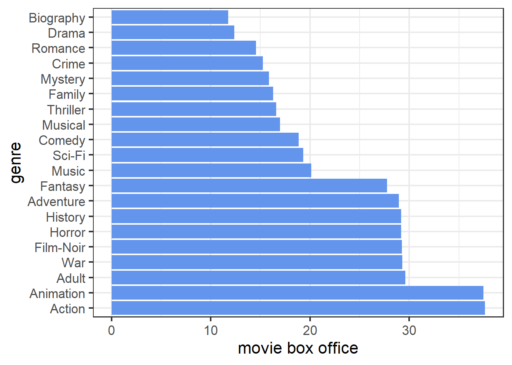

Chapter 4 Decision Tree
4.2 Model Visualization
 The plot visualized our regression tree model. Since the size of the tree is so large, visualization does not work here. But we can find out each node’s information and splitting rule by checking the summary information of tree model.
4.3 Model Evaluation
## MSE MAE R-Squared
## 1 1521.118 18.94823 0.5960518The evaluation table shows that regression tree model has much better performance than linear model no matter which criterion we use. Hence, in terms of accuracy, decision tree would be my choice.
4.4 Model Interpretation
4.4.1 Partial Dependence Plot
Comparing the PDP of rating by using tree model and linear model, we find that the overall trend is the same, i.e., as rating goes up, predicted movie box office rises. And one difference is that, instead of being a straight line in linear model, we can observe that the line in tree model has ups and downs. This might be explained by the intrinsic nature of linear model: the effect of each feature on response variable alone is also linear. But in tree model, this is not that case, the mean box office of movies with higher rate is not necessarily larger than the mean box office of movies with lower rate. And clearly, the latter is what we observed more often in reality.
More insights that we can derive from this plot is that as rating increases from 4 to 6, movie box office does not increase a lot. This is probably because for those movies, people would watch and rate them online, but are not willing to buy tickets to watch them in theater. Hence, they all tend to have few box office. As for why there is a huge jump for rating from 7.8 to 8.3, I find it hard to give a reasonable guess.

Again, the same part and difference between PDP of runtime by using tree model and linear model is similar to what we get at rating part: the overall trend is the same and we can get more insights from tree model. One more thing to notice is that, the range of movie box office in tree model for the two different features are not as much as it in linear model. This suggests that rating and runtime in tree model may contribute relatively equal explanations for variation in response variable.
The PDP of certificate in tree model shows that PG and PG-13 movies tend to have more box office while Not Rated movies tend to have less box office. This is similar to the results obtained from linear model.
The PDP of genre in tree model shows that action, animation, and horror movies are top three most popular types while drama, biography, and romance are the three types with least audience. In general, this is consistent with the conclusion by using linear model. But note that, the difference between each genre in tree model are far less than the difference in linear model. This indicates that genre in tree model is not as much important as it is in linear model.
4.4.2 Local Interpretable Model-agnostic Explanations (LIME)
| model_intercept | model_prediction | feature | feature_value | feature_weight | feature_desc | prediction |
|---|---|---|---|---|---|---|
| -22.479 | 133.157 | year | 92 | 41.078 | year = 1996 | 8.625 |
| -22.479 | 133.157 | certificate | 3 | 61.044 | certificate = PG | 8.625 |
| -22.479 | 133.157 | runtime | 100 | 44.626 | runtime <= 232 | 8.625 |
| -22.479 | 133.157 | genre | 1 | 33.229 | genre = Action | 8.625 |
| -22.479 | 133.157 | rating | 5 | -24.341 | 3.27 < rating <= 5.25 | 8.625 |
From the explanation table, we have that the local model for case 3649 is
\(\hat{y}_{lime} = -30.148 -17.620 \cdot \mathbf{1}_{3.27 < rating <= 5.25}+55.755 \cdot \mathbf{1}_{certificate = PG}+31.348 \cdot \mathbf{1}_{genre = Action}+51.782 \cdot \mathbf{1}_{runtime <= 232}+22.856 \cdot \mathbf{1}_{year = 1996}\)
By comparing this result with lime model get in linear model, we find that even the direction of the effect of some features changed. For example, \(runtime\leq232\) has a negative contribution to prediction in linear part, but it has a positive contribution here. Another difference is that the feature weight also changed a lot, certificate in linear part only rank as third one but has the largest weight here. Since the specific algorithm used to generate the local model is not clear to me, I could not provide an explanation for those difference. So how original model affects the fit of local model is waiting for more research.
## lime error original error
## 1 -33.19643 -13.082431
## 2 106.24943 -20.313573
## 3 -96.67111 8.675889
## 4 -33.11856 1.751440The residual table shows that our tree model also outperforms the local model. This may support my guess about trade off between interpretability and accuracy. Also note that the error for each case in tree model is less than it in linear model.
4.4.2.1 Gower Distance
From the plot, we still have that as Gower distance increases, the variance of difference between pairs increases. One major distinction from linear part is that for pairs at the same difference level (the Gower distance between the pair is same), tree model tend to make more variant predictions compared with linear model. In my opinion, I think this might be an advantage since considering the features we include, two movies defined as similar will just have common characteristics in terms of rate, run time, genre, certificate, and published year. But for movies in which even all of the above features are same, in real case, they still tend to have very different box office as many other factors could have impact on, such as season, published area, and published volume in cinema every day.
4.4.3 Shapley Additive Explanations
From the SHAP plot, case 10 has the most prediction value, runtime and rating contribute majority of the difference between mean gross of the 4 cases and prediction of case 10. By checking the feature value of each case in our sample, we find that case 10 has the highest rate and longest run time.
On the other hand, case 4464 has the least prediction value, year is the main factor caused the low prediction. And we can see that case 4464 is the oldest movie which is published in 1973.
By compare the interpretation provided by SHAP and by LIME, they seems to be not consistent with each other in explanations for some features. Hence, the question is which one provide a more reasonable interpretation or it depends on situation and purpose.
4.4.4 Feature Importance
The feature importance plot shows that year is the most important feature while genre is the least important feature. This seems to be consistent with result obtained from partial dependence plot.
When compared with feature importance in linear model, they are quiet different. Year in linear model is not as important as it is in tree model. My opinion is that the relationship between year and gross is not linear but will fluctuate, hence linear model could not capture the impact of year. But linear constraint is not a problem for tree model, hence tree model could utilize this feature well.